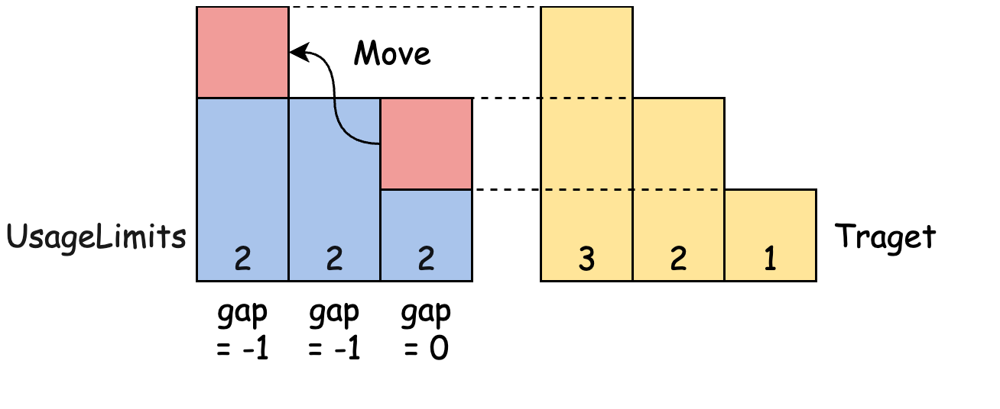
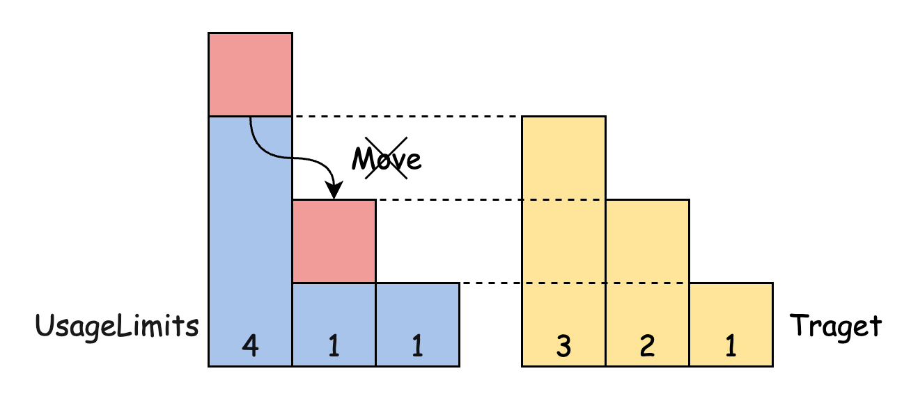

LC 2790. 长度递增组的最大数目
https://leetcode.cn/problems/maximum-number-of-groups-with-increasing-length/description/
我看了题解里面两种解法，感觉都挺好的
- 二分 https://leetcode.cn/problems/maximum-number-of-groups-with-increasing-length/solutions/2355580/pai-xu-er-fen-tu-jie-ban-by-yzq-a-smlx/
- 贪心 https://leetcode.cn/problems/maximum-number-of-groups-with-increasing-length/solutions/2355412/tan-xin-by-kuang-qie-2-fw0r/
二分的思路就是检查K个长度是否可以达到，我们可以从最大的往前填补：
- 如果当前值超过预期值，那么多余的不能被使用。
- 如果当前不够预期值的话，那么可以从后面的找补回来。
- 但是填充的时候应该使用当前值。


class Solution:
def maxIncreasingGroups(self, usageLimits: List[int]) -> int:
usageLimits.sort(reverse=True)
def test(K):
gap = 0
for x in usageLimits:
gap = min(gap + x - K, 0) # 只使用当前值去填充，之前多出来的会回填到之前的空处。
# 因为我们这里是从大到小填充，所以肯定不会出现重叠的情况。
if K > 0:
K -= 1
return gap >= 0
s, e = 1, len(usageLimits)
while s <= e:
k = (s + e) // 2
if test(k):
s = k + 1
else:
e = k - 1
return e
贪心则是从小到大进行填充：
- 如果当前填满的话，那么将多余的放在后面，并且将预期值+1
- 因为后面的数更大，会尽量用后面的数去填，所以不会出现重叠
class Solution:
def maxIncreasingGroups(self, usageLimits: List[int]) -> int:
usageLimits.sort()
xs = usageLimits.copy()
n = len(xs)
xs.append(0)
ans = 1
for i in range(n):
if xs[i] >= ans:
xs[i] -= ans
ans += 1
xs[i + 1] += xs[i]
return ans - 1